В Москве первый отдел появился в 1881 г. в журнале «Зритель». Большую активность развивает известный шахматист и композитор . В 80-х годах он создает и редактирует отделы в ряде московских изданий: «Радуга», «Охотник», «Московская иллюстрированная газетка», «Русский курьер», «Голос Москвы» и др. Бобров всячески поддерживает начинающих композиторов, способствует их росту. В редактировавшихся им изданиях делали первые шаги многие русские проблемисты. Только в отделе «Радуги» за несколько лет его существования было помещено около 200 оригинальных задач русских авторов.
Здесь же, в отделе «Радуги», в 1883 г. Бобров организовал конкурс составления двухходовых шахматных задач. Отличия получили: I приз—, II приз — , почетный отзыв — . Задача-победительница приведена на диаграмме № 000.
№ 000
В. Сердобинский «Радуга», 1883 г. I приз
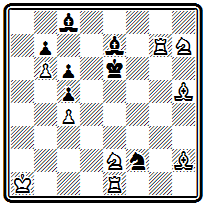
Мат в 2 хода
Первый ход 1. Сс7 ставит черных в положение цугцванга. Наиболее интересен вариант 1... Kpd 7 с чистым матом 2. Kf 8#. Два варианта создает другой белый конь 1... С~ 2. Kd 4# и 1... Kpf 5 2. Kg 3#.
Второй конкурс, объявленный отделом «Радуги» в 1886 г. на составление двух - и трехходовых задач, остался незаконченным ввиду прекращения журнала.
В 1891 г. и начинают издание большого шахматного журнала, первоначально (из цензурных соображений!) называвшегося «Шашечница», а со следующего года переименованного в «Шахматное обозрение». Этот журнал выходит до 1893 г. и после двух перерывов возобновляется в 1901—1904 и 1909—1910 гг.
В этом журнале помещался большой отдел композиции со многими оригинальными произведениями, подробной хроникой соревнований, статьями по теории и технике композиции. Подводя первые итоги работы, редакция отмечала, что в журнале только за один 1891 г. было помещено 205 задач, из которых 164 - русских авторов. Для сравнения указывалось, что в том же году в «Дейче шахцейтунг» увидели свет 242 задачи, в «Стратежи» - 244.
Уже в первый год своего существования журнал успешно провел конкурс составления задач, на который поступили 23 посылки с 46 произведениями. Судили конкурс , и . Они признали лучшими в разделе двухходовок задачу , а среди трехходовок — произведения Галицкого и Ю. Ишты. Однако за посылку в целом Галицкому был присужден только 2-й почетный отзыв, так как его двухходовка по идее оказалась сходна с ранее опубликованной задачей Мэкензи. I приз и 1-й почетный отзыв получил за посылки московский проблемист , II приз был присужден и 3-й почетный отзыв — Г. Зиссерману.
Задача № 000 из посылки, удостоенной высшего отличия, содержит интересную игру двух полусвязанных черных фигур:
№ 000
Э. Монтвид «Шашечница», 1891 г. I приз
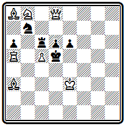
Мат в 4 хода
1. Kpd 3 К:а5 2. Ф: d 6#; 1... К: d 8 2. cd #; 1... Л b 6 2. cb #; 1... К(Л):с5 2. Л:с5#; 1... Лс7(с8) 2. Ф: d 6# (но не 2. c 6+ Кс5!). Недостатком первого хода является то, что у черного короля отнимается свободное поле с4.
В 1892 г. «Шахматное обозрение» проводит второй конкурс, уже раздельно для двухходовых и трехходовых задач. Это состязание привлекло участников и из-за рубежа. Всего поступило 84 произведения, из которых судьи , и после проверки оставили для присуждения 32 двухходовки и 25 трехходовок. Большой успех имел в конкурсе Галицкий, который получил I и II призы и 1-й почетный отзыв в разделе двухходовок и III приз—за трехходовку.
Помещая подробные результаты конкурса с анализом всех задач, Бобров так формулирует свои взгляды: «Как художественнее произведение, шахматная задача должна представлять собой стройное целое, от которого невозможно отнять ни одной его части... Оригинальность и красота идеи, глубина замысла, тонкость и чистота отделки — вот те положительные и ценные качества, которые каждый составитель должен стремиться вносить в свои задачи, число же вариантов, вне их красоты, чистоты и глубины, есть второстепенное качество и возведение его в идеал есть падение искусства».
Как композитор П. Бобров не был особенно активен и больших успехов не имел. Однако его деятельность как талантливого и инициативного организатора сыграла важную роль в развитии русской композиции. Из его задач приводим двухходовку Л$ 339,
№ 000
П. Бобров «Дейче вохеншах», 1899 г.
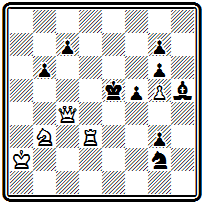
Мат в 2 хода
выделяющуюся хорошим первым ходом 1. Kd 4 Kpf 4 2. Kf 3#, 1… Kpd 6 2. Кс6#, 1... f 4 2. Фе6#.
Почти в одно время с «Шахматным обозрением», в 1890 г., в Петербурге начал выходить «Шахматный журнал», который с небольшим перерывом в 1898—1899 гг. просуществовал до 1903 г. Однако этот орган, благодаря личности своего издателя А. Макарова, по выражению Чигорина, «хромал во всех отношениях». Так, и в вопросах композиции «Шахматный журнал» держался совсем иной ориентировки, чем московские издания. В частности, , редактировавший здесь отдел задач в 1892—1896 гг., существенно расходился с Бобровым в оценке состояния и перспектив русской композиции. Он считал ни мало ни много, что она лишь вышла из «младенческого периода» и ей надлежит вступить в «период школьный», и осуждал Боброва за то, что тот публикует исключительно русские задачи и даже «сопровождает их восклицательными знаками»!
Характерно, что в обоих больших конкурсах, организованных «Шахматным журналом», в качестве судей приглашались преимущественно зарубежные авторитеты. Первый конкурс на составление двухходовок был проведен в 1892 г. Его судьями были , И. Бергер и Я. Добруский, но главную роль организаторы, видимо, отводили Бергеру. Во всяком случае именно его статья была предпослана конкурсу. В ней австрийский мастер доводил до сведения всех участников, что он ни в чем не изменил своих взглядов на композицию со времени выхода своей книги «Шахматная задача...» Бергер подвергал резкой критике «вульгарные двухходовые задачи, которые вошли в моду преимущественно в Англии и Америке».
Состязание прошло успешно. Всего поступило 123 задачи, в том числе и от известных зарубежных композиторов. I приз был присужден Галицкому, остальные отличия достались чешским авторам, Бергер и Добруский разошлись в распределении III и IV призов между двумя задачами и предоставили решение Чигорину.
Мэкензи (кстати, сам участвовавший в конкурсе, но потерпевший неудачу в своей попытке подделаться под вкусы судей, придерживавшихся столь отличных творческих воззрений) назвал соревнование «одним из наиболее интересных современных конкурсов двухходовых задач». При этом он отмечал, что «любой композитор, принадлежащий к английской или американской школе, мог остаться недовольным результатом конкурса. Нельзя, конечно, отрицать красоту чистых и экономичных матовых положений, столь строго требуемых германской школой. Нам, однако, кажется, что такое требование сделает невозможным воплощение многих блестящих идей».
Второй конкурс «Шахматного журнала», проведенный в 1894 г., был посвящен трехходовкам. Он собрал всех наиболее известных композиторов мира. Максимов, Я. Добруский, Ф. Дуббе и О. Немо оказались в большом затруднении при распределении отличий. В отчете была приведена таблица с первоначальным присуждением каждого из судей. Несмотря на принадлежность всех их к одной школе, расхождение в оценке оказалось весьма значительным. Достаточно сказать, что композиция, которую Немо считал лучшей, двумя другими судьями помещалась на 9-10-е место, а Добруским совсем не включалась в число заслуживающих отличия. Ввиду невозможности достичь согласованного решения окончательные результаты определились суммированием очков по присуждениям каждого из судей!
«Шахматный журнал» проявил инициативу в проведении первых русских тематических конкурсов. В гг. им были организованы конкурсы двухходовок - миниатюр и трехходовок на тему взятия на проходе.
В русских шахматных журналах 90-х годов велась оживленная дискуссия по всем основным вопросам, относящимся к теории и практике композиции. Шедшая в гору отечественная композиция выбирала собственный путь для своего дальнейшего развития. Она критически присматривалась к уже сформировавшимся направлениям и давала им оценку. И это вовсе не был робкий голос начинающего ученика. Гаврилова, Н. Извольского, Н. Максимова и особенно А. Галицкого послужили теоретической основой развития русской композиции.
Мнения расходились. Многие решительно осуждали «механические» задачи англо-американского стиля. Но раздавались голоса и в защиту этого направления. Различие в суждениях нашло отражение и в творческой практика русских композиторов. Особенно заметно это в двухходовке того времени.
Задача № 000 является прекрасным образцом чешского стиля.
№ 000
Э. Монтвид «Чесс мансли», гг.
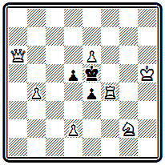
Мат в 2 хода
Хороший вступительный ход 1. Kh 4, предоставляющий черному королю свободное поле с пожертвованием ладьи, приводит к цугцвангу, в результате которого получаются четыре варианта с разнообразными правильными матами: 1... Kpd 4 2. Kf 3#; 1... Кр: f 4 2. Ф d 6#; 1... е3 2. Kg 6#; 1... d 4 2. Л f 5#.
В несколько ином роде составлена композиция № 000.
№ 000
А Степанов «Дюнацейтунг», 1900 г.
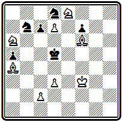
Мат в 2 хода
Здесь правильные маты бледнее и однообразнее, но все варианты осложнены моментом блокирования поля у черного короля: 1. Kpg 4 Кс5 2. Ка:с7 # ; 1... Kd 6 2. Ке:с7 # ; 1... Ке 6 2. с4 # .
Последовательным противником англо-американской двухходовки был Максимов. Он неоднократно выступал с резкой критикой «механических задач в духе конца века», а в своих собственных произведениях все внимание уделял художественной обработке позиции. Его двухходовка № 000 выделяется красивым вступлением
№ 000
Я. Максимов «Шахматный журнал», 1894 г.
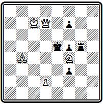
Мат в 2 хода
1. Фа4 и изящными правильными матами: 1... Kpf 6 2. Фа1 # , 1... Kpd 4 2. Cd 6 # и 1 ... Кр: f 4 2. Cd 6 # .
Большое место в творчестве Максимова занимала обработка ранее опубликованных задач других авторов. Печатание таких улучшенных версий без ссылок на предшественников не раз вызывало резкий протест. Мэкензи, например, прямо писал, что Максимов не имел права ставить свою фамилию над подобными переработками чужих произведений.
Большие надежды как композитор подавал студент Харьковского университета , умерший совсем молодым в 1897 г. Непродолжительное время в 1895 г. под его редакцией выходил отдел в петербургском журнале «Север». Помещая в отделе результаты конкурса трехходовок «Шахматного журнала», Истомин отмечал, что «вследствие слишком своеобразного понимания задачного искусства, судьями, строго придерживающимися правил и требований так называемой германо-чешской школы, не было выделено много прекрасных русских задач, имеющих большее на то право, чем некоторые из премированных».
Творческие взгляды Истомина не успели четко сформироваться. Однако, судя по его задачам, он не считал обязательным требование правильности матовых позиций. В задаче № 000 из посылки, получившей II приз на конкурсе «Шашечницы», представлены три связывания черных фигур:
№ 000
Л. Истомин «Шашечница», 1891 г II приз
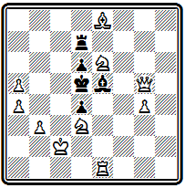
Мат в 2 хода
1. Ф d 8 Крс6 2. Фа8#, 1... Кр:е6 2. Kf 4# и 1... Л~ 2. Л:е5#. Дополнительные варианты: 1... Л: d 8 2. Кс7 # и 1... С ~ 2. К b 4 # .
С безоговорочным осуждением задач англо-американского стиля не соглашался из Измаила. Противники подобных задач заявляли, что в них нет никакой идеи, что они представляют механическое соединение многочисленных вариантов.
Возражая на это, Гаврилов писал: «Мы часто встречаем действительно прекрасную двухходовую задачу, которая, по-видимому, представляет «набор различных, но равноценных вариантов». Мне кажется, что идея таких задач заключается не в каком-нибудь из вариантов, а в их совокупности, в возможности сочетания их в стройное целое».
В самом начале XX века Гаврилов выступает против одностороннего увлечения правильными матами в язвительном памфлете «Эстетика в квадрате», помещенном в альманахе «Черный король». В дальнейшем он станет первым русским композитором, последовательно разрабатывающим тактические идеи в игре черных фигур, и добьется на этом пути значительных успехов.
В задаче № 000 любопытны варианты с тонкими защитительными моментами.
№ 000
К. Гаврилов «Шахматный журнал», 1897 г.
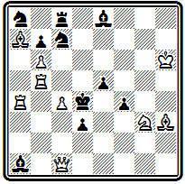
Мат в 2 хода
После 1. Се6 грозит 2. с5# . В разветвлении 1... К: b 6 2. С: b 6# черные связывают своего коня, но так, что при попытке осуществить угрозу конь окажется развязан. Лет тридцать спустя этот мотив станет основой тематического комплекса, получившего название защиты Шифмана. В другом варианте 1... е4 2. Kf 5# черные защищаются разблокированием поля е5, после чего белые не могут выключить от этого поля свою ладью. Задача построена по нормам английской школы — ни на один ход черных нет двойных ударов. В частности, черная ладья с8 поставлена специально для того, чтобы не было дуали на ход 1... К: b 5. Без нее, помимо угрозы, возможен мат 2. cb #. К сожалению, здесь есть побочное - 1. bc +, которое можно грубо исправить добавлением пешка e6,
или такой версией, предложенной Александром Сыгуровым -
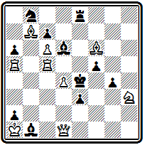
Мат в 2 хода
1. Л a 4?(2. d 5#)С c 2! 1. Л c 4!(2. d 5#); К: c 6 2. С :c6#; С e5 2. de#; С c5 2. dc#;f4 2. К g5#;e2 2. Ф :e2#; С d3 2. Ф h1#
начал составлять задачи в середине 80-х годов и был наиболее активен в начале нынешнего века. Он работал в различных направлениях. На уровне современных достижений находится проблема № 000, в которой выделяются варианты
№ 000
Н. Извольский «Шахматный журнал», 1892 г.
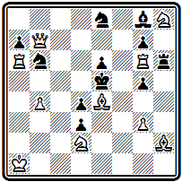
Мат в 2 хода
1. Ф f 7 Kpd 6 2. Кс4 # , 1... Kd 6 2. Ф: g 7# и трехкратный мат тяжелыми белыми фигурами с поля е6 — 1... Kb ~ 2. Ла:е 6 #, 1... Л ~ 2. Л g :е 6# и 1... Ch 7 2. Ф:е6#.
Об этом произведении Мэкензи в своей статье о конкурсе «Шахматного журнала» писал: «Задача, вполне могущая взять приз на конкурсе, в котором судьи англичане или американцы... Мы признаем эту задачу выше некоторых задач, премированных на русском конкурсе».
Классическим образцом английского стиля является задача № 000, занявшая первое место на большом международном конкурсе газеты «Кентиш меркюри», выше таких признанных корифеев, как Мэкензи и Блэк. На доске мало фигур, они играют очень гармонично и создают ряд тонких вариантов.
№ 000
П. Маракулин «Кентиш меркюри», 1898 г. 1 приз
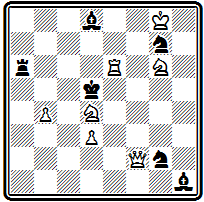
Мат в 2 хода
После 1. К b 5 черные в цугцванге. Ладья привязана к защите двух пунктов — а2 и d6, с которых могут матовать белые. Правда, она может играть, предупреждая эти маты, но тогда получаются два варианта с блокированием: 1... Лс6 2. Ле5# и 1... Л:е6 2. Фс5#. Игра черного слона d8 приводит к перекрытиям ладьи: 1... Са5 2. Фа2# и 1... С b 6 2. Л d 6#. На другие ходы слона матует 2. Кс7#. Любой ход коня g7 допускает 2. Ф f 5#, а при защите 1... К:е6 вторично блокируется поле е6, что приводит к другому мату —2. Ф f 3#. Остальные два варианта проще 1... Кр:е6 2. Ф f 7# и 1... K 2~ 2. Kf 4 #. Судья конкурса Лоус в своем отчете подчеркивал большое разнообразие игры и исключительную грациозность формы: при наличии всего тринадцати фигур осуществляются 9 различных матов; особо он отмечал соразмерность активности фигур их силе и наличие свободного поля у черного короля.
Если в двухходовой задаче русские композиторы пробовали силы и добивались успехов в различных направлениях, то в трехходовках они в основном работали в стиле, близком к чешской школе. Они стремились создавать легкие экономичные произведения с рядом правильных матов.
Задача № 000 подтверждает отмеченную выше разносторонность интересов Извольского. Здесь четыре варианта заканчиваются правильными матами:
№ 000
Н. Извольский Конкурс Вюрцбургского шахматного клуба , 1895 г.
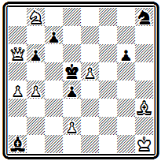
Мат в 3 хода
1. Кс6 (угроза 2. d 3 Кр:с6 3. Фа8#, этот же мат получается и после 1... g 5 2. Cf 5). Основные варианты: 1 ... d 3 2. Фс4+ Кр:с4 3. Се 6# ; 1... Кре4 2. Ф e 2+ Kpd 5 3. Ке7 # ; 1... Kf 7 2. Cg 2+ Kpe 6 3. Фс8 # .
Большим талантом было отмечено творчество молодого композитора шахматных и шашечных задач .
Безвременная смерть в 1905 г. помешала раскрыть его яркое дарование в полной мере. Наибольшие достижения Шошина относятся к первым годам XX века. Проблема № 000 содержит четыре удачно скомпонованных правильных диагональных мата:
№ 000
А. Шошин «С.-Пб. цейгунг», 1898 г. Поч. отзыв
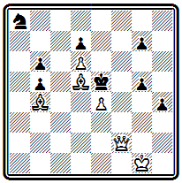
Мат в 3 хода
1. Kpg 2 g 6 2. Ф f 6+ Kp : f 6 3. Сс3#; 1... h 3+ 2. Kpg 3 ~ 3. Ф b 2#; 1... g 4 2. Ф b 2+ Kpf 4 3. Cd2#; 1... Kc7 2. Cc3+ Kp:d6 3. Ф f8#.
Ряд активных и творчески сильных проблемистов выдвинулся в конце XIX века в Прибалтике. Широкой популярностью пользовался А. Бурмейстер, сборник задач которого вышел в 1902 г. в Ревеле (63). Несложная, но изящная композиция № 000 содержит три варианта:
№ 000
А. Бурмейстер «Шахматный журнал», 1900 г.
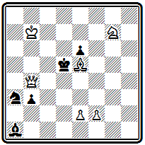
Мат в 3 хода
1. Kh 5 Кр:е5 2. Фс5+ Кре4 3. f 3#, 1... Кс4 2. Ф b 5+ Кре4 3. Kg 3#; угроза 2. е4+ Кр:е5 3. f 4#.
В задачей № 000 интересны последовательные пожертвования белого ферзя на первом и втором ходах:
№ 000
А. Бурмейстер «С.-Пб. цейтунг», 1898 г.
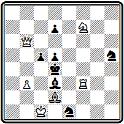
Мат в 3 хода
1. Фа6 Кре4 2. Ф f 6 К: f 6 3. Л f 4#, 1... С:а6 2. Сс3+ Кре4 3. Kg 5# и 1... K : f 3 2. Фа1+ Кре4 3. Kd 6#. Дополнительные варианты: 1... с4 2. Ф b6+ ; 1... ~ 2. Фа1 +.
Четырехходовка № 000 очень оригинальна по построению и выделяется тонкими маневрами белой ладьи.
№ 000
А. Бурмейстер «С.-Пб. цейтунг», 1896 г.
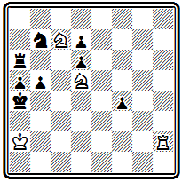
Мат в 4 хода
После 1. Лс2 грозит 2. Лс3; на 1... Лс6 белые все же продолжают 2. Лс3 с двумя вариантами: 2... Л:с3 3. К b 6+ Кр b 4 4. Ка6# или 2... b 4 3. Лс4 Л:с4 4. К b 6# и 3... Л:с7 4. Кс3#. Маневр Лс2-с3-с4 весьма остроумен. Еще один правильный мат осуществляется в разветвлении 1... Кс5 2. Л c 4 + bc 3. Кс 3 + Кр b 4 4. K 7 d 5 # .
В Риге работали известные композиторы братья Ян и Карл Бетинь. Сборник их композиций был издан в 1930 г. (64).
В миниатюре № 000 обращают на себя внимание тихие ходы ферзя в главном варианте
№ 000
Я. Бетинь «Дейче шахцейтунг», 1888 г.
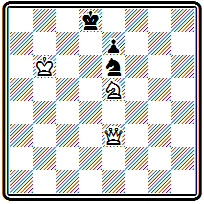
Мат в 3 хода
1. Фс1 Кре8 2. Ф h 1, приводящие к позиции цугцванга с правильными матами 2... Kpd 8 3. Фа8 # и 2... Kpf 8 3. Ф h 8 # . Аналогичная матовая картина получается в дополнительном варианте 1 ... Кс5 2. Ф:с5 е 6 3. Ф f 8 # .
Лучшие достижения Я. Бетиня относятся к области этюда. Значительных успехов в составлении задач достиг Карл Бетинь. Уже одно из ранних его произведений - № 000 - приносит ему победу в конкурсе итальянской газеты. В ней представлено четырехкратное пожертвование белого ферзя:
№ 000
К. Бетинь «Газетта литерариа», 1887 г. I приз
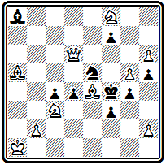
Мат в 3 хода
1. С h 7 (угроза 2. Ф:е5+ Кр:е5 3. Сс7#) 1... Кре3 2. Ф: d 4+ Kp : d 4 3. С b 6#, 1... Кр: g 5 2. Ф f 6+ Kp : f 6 3. Cd 8# и 1... dc 2. Фd2+ cd 3. С: d 2 # ; вторая угроза 2. Kd 5+.
В этой задаче еще нет правильных матов. В дальнейшем, однако, К. Бетинь последовательно добивается их осуществления. В примере № 000 после
№ 000
К. Бетинь «Мюнхенер нейесте нахрихтен», 1889 г. Поч. отзыв
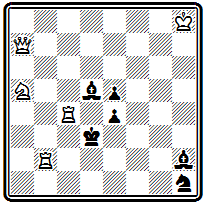
Мат в 3 хода
1. Кс6, жертвующего ладью, грозит 2. Л b с2. При 1... Cg 1 угроза проходит, так как взятие ферзя 2... С:а7 не препятствует осуществлению мата 3. Л4с3# и даже делает его правильным. Центральный вариант 1... С f 4 с двойной жертвой ферзя 2. Фе 3 + и правильным матом после 2... Кр:е 3 3. Лс 3#. Еще один правильный мат осуществляется в разветвлении 1... Кр:с4 2. Лс2+ Кр d 3 3. К b 4#. На 1 ... С:с4 решает 2. Фа 3 +.
А вот две интересные миниатюры К. Бетиня. В задаче № 000 осуществлены в предельно экономичной форме три превращения белой пешки:
№ 000
К. Бетинь «Бальтише шахблеттер», 1891 г.
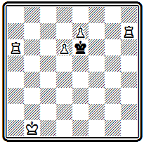
Мат в 3 хода
1. Ла5 Kpf 6 2. e 8 C Кре6 3. Л h 6#, 1... Кр: d 6 2. е8Л Крс6 3. Ле6# и 1... Kpd 7 2. е8Ф+ Кр:е8 3. Ла8#.
Композиция № 000 содержит ряд остроумных вариантов.
№ 000
К. Бетинь «Дейче шахцейтунг», 1893 г.
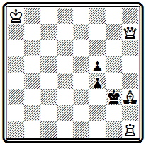
Мат в 3 хода
После двойной жертвы слона 1. Cg 4 черные оказываются в цугцванге. На принятие жертвы белые в обоих случаях отвечают тихими ходами ладьи: 1... Кр: g 4 2. Л h 3 f 3 3. Ф h 4# и 1... fg 2. Л h 2 Kpf 3 3. Ф d 3# или 2... f 3 3. Фс7# — красивый правильный мат. В двух других вариантах играет ферзь: 1... Kpf 2 2. Фа7 + и 1 ... f3 2. Ф h 2+.
Изящная проблема № 000 имеет хорошие варианты и
№ 000
К. Бетинь «Шахматный журнал», 1893 г.
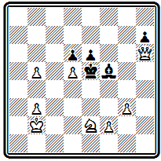
Мат в 3 хода
прекрасный первый ход 1. Кра3, ставящий черных в положение цугцванга. Особенно красив вариант с новым цугцвангом после жертвы коня 1... ed 2. Kd 4. На безразличный ход слона 2... С~ матует 3. Ф f 4#, а после тонкого ответа 2... Се4 следует правильный мат 3. Ф g 7# с использованием блокирования свободного поля. Второй правильный мат проходит при взятии коня 2... Кр: d 4 3. Фе3#. Два диагональных правильных мата ферзем получаются в другом разветвлении: 1... Кр: d 5 2. Кс 3+ Кре5 3. Фg7 # или 2... Крс5 3. Фе3# —вот зачем белый король первым ходом пошел на а3, он должен атаковать поле b4; 1... Кре4 2. Фе 3+, 1... Cg 6 2. Ф f 4+.
Вершину развития русской задачной композиции в дореволюционную пору, несомненно, образует творчество . Он родился в 1863 г. Будущий выдающийся проблемист рано познакомился с шахматами, а студентом Казанского университета, в 1885 г., завоевал II приз в турнире местного шахматного клуба. В следующем году в связи со вторым, оставшимся неоконченным конкурсом журнала «Радуга» Галицкий начал заниматься составлением задач. Именно в композиции он нашел свое настоящее шахматное призвание, и всю свою дальнейшую жизнь, работая земским врачом в Казанской, Вятской и Саратовской губерниях, а послеоктябрьской революции — врачом рабочей амбулатории гор. Саратова, он непрерывно и весьма активно отдавал силы и шахматному творчеству.
Галицкий рано получил всеобщее признание и уже в конце Х1Х века стал популярнейшим русским проблемистом. Его оригинальные задачи печатались в большом количестве во всех русских шахматных изданиях и во многих зарубежных журналах. Всего им напечатано до 1860 задач и более тысячи осталось неопубликованными. Перед смертью, последовавшей в 1921 г., Галицкий привел в порядок свой архив и разбил все произведения на 43 тематические группы по признаку участвующих белых сил. Сборник задач с материалом конь и два слона был издан в 1924 г. (65). Галицкий не стремился к внешним успехам; он мало участвовал в конкурсах. Число завоеванных им отличий невелико — всего около 30 и среди них— 10 первых призов. Нужно отметить, что он был в числе победителей первых русских конкурсов.
Вдумчивое, серьезное отношение к композиции было характерной чертой Галицкого. Много его статей и заметок по самым различным вопросам составления задач было напечатано в 90-х годах в «Шахматном журнале» и «Шахматном обозрении». Здесь и заметки «К теории составления задач», и выступление в связи с результатами конкурса, и участие в дискуссии «о лучших ходах черных и о двойных ударах» и т. д. Две фундаментальные статьи Галицкого «Об осложнении идей в шахматных задачах» и «О различном выражении одинаковых идей в шахматных задачах», напечатанные первоначально в «Шахматном журнале», были выпушены затем отдельной книгой (66).
Галицкий глубоко понимал природу шахматной композиции. Он никогда не забывал о неразрывной органической связи композиции с шахматной игрой, из которой заимствуются все элементы для построения задач.
Такой подход к композиции давал Галицкому твердую опору в его деятельности и объективные критерии для оценки разных явлений в области композиции. Он отличался большой широтой взглядов и был чужд всякой односторонности.
Уже в 1894 г. в одной из своих статей, анализируя состояние современной композиции, Галицкий пришел к глубоким, принципиально важным выводам, наложившим отпечаток на все дальнейшее развитие русской композиции. Характеризуя два основных направления в задаче – англо-американскую и чешскую школы, он писал: «Обе школы идеализируют в задаче игру, стремятся проводить только лучшее, красивое, но чешская школа считает, что центр тяжести красивого лежит в матовых положениях, а англоамериканская — что в ходах.... На дуали английская школа поэтому смотрит как на крайнее зло...» И дальше: «Я не буду решать, кто прав... Мне лично казалось бы, что красивое можно найти во всем том, из чего слагается игра, следовательно, и в ходах, и в матовых положениях. Поэтому можно думать, что та и другая школа, имея в основе правил разумные основания, равно погрешат против истины, доходя до крайностей в применении этих правил. Весьма возможно, что истинный, единый художественный стиль с равной любовью будет относиться как к идеям хода, так и к идеям матовых положений...»
Вот именно эта-то верность «истинному, единому художественному стилю» отличала Галицкого от большинства зарубежных теоретиков, возводивших в абсолют один из элементов задачи в ущерб остальным, и явилась основой последующего развития русской задачной композиции. Свое дальнейшее развитие принцип разносторонности нашел в творчестве прославленного и затем в работах советских проблемистов. В те времена, однако, «погрешения против истины» были столь сильны у представителей англо-американской школы, что Галицкому не раз приходилось выступать с резким осуждением их произведений. Ему ближе были идеалы чешской школы, хотя надо подчеркнуть, что он всегда избегал одностороннего увлечения матовыми картинами.
В каждом своем произведении Галицкий стремился воплотить интересную мысль, тонкий нюанс, вносил оживление в игру фигур, как бы одухотворяя их. У него всегда находилась какая-то «изюминка», делающая каждую его задачу новой, оригинальной, не похожей на другие. Галицкий большое значение придавал форме, неизменно добиваясь изящества конструкции и решения, предельной экономичности позиции. Он считал обязательным построение правильных матов, но видел в них лишь логическое завершение художественности формы и никогда не возводил их в самоцель. Свои творческие принципы Галицкий последовательно проводил во всех своих лучших произведениях, будь то двухходовки или пятиходовки. Понять и оценить эти принципы лучше всего путем непосредственного знакомства с его задачами.
Идея композиции № 000, как писал сам А. Галицкий, «заключается в своеобразном первом ходе и трех правильных матовых положениях».
№ 000
А. Галицкий «Шашечница», 1891 г.
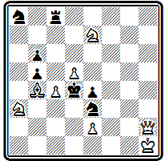
Мат в 2 хода
Покидая вертикаль«h», ферзь открывает возможность шаха черной ладьей, однако он становится в засаду таким образом, чтобы подготовить ответ на этот шах: 1. Ф b 8 Л h 8+ 2. Ф: h 8#. Варианты с правильными матами: 1... Л: b 8 2. Кс6#, 1... К:с4 2. Кс2# и 1... Ке~ 2. Kf 5#. Любопытен дополнительный вариант с перекрытием ладьи 1... Кс7 2. Ф: b6# .
Позиция № 000 завоевала I приз на конкурсе «Шахматного журнала».
№ 000
А. Галицкий «Шахматный журнал», 1892 г. I приз
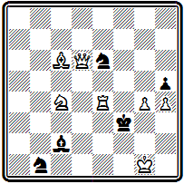
Мат в 2 хода
В ней с классической простотой, в высокохудожественной форме, с правильным матом воплощена идея лойдовской задачи № 000.
Главный вариант: 1. Са4 С:е4 2. Cd 1#.
С исключительной экономией, при использовании крайне ограниченного материала, представлена серия правильных матов в примере № 000.
№ 000
А. Галицкий «Шахматное обозрение», 1892 г. I приз
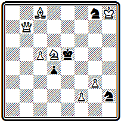
Мат в 2 хода
1. Kf 6 К: f 6 2. f 4#; 1... Kh ~ 2. Kg 4#; 1... Кр: f 6 2. Ф g 7#; 1... d 3 2. Ф b 2#. На 1... Kg~ матует 2. Фе7 #. Эта задача вышла на первое место в конкурсе «Шахматного обозрения».
В том же конкурсе почетным отзывом была отмечена задача № 000, в которой очень остроумно использован механизм взятия на проходе:
№ 000
А. Галицкий «Шахматное обозрение», 1892 г. почетный отзыв
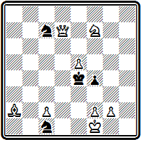
Мат в 2 хода
1. g 4 fg 2. Ф g 4# и 1... f 3 2. Фа4# — оба мата правильные. Остальные варианты: 1... Kpf 3 2. Kg 5#; 1... К7~ 2. Ф d 5#; 1... К1~ 2. Фd3#.
Приведенные примеры показывают лучшие достижения Галицкого в области двухходовки. В дальнейшем он уделяет ей меньше внимания, сосредоточив свои силы на других жанрах задачной композиции.
К началу 90-х годов Галицкий находился уже во всеоружии современной техники композиции. Выдающееся мастерство позволяло ему воплощать в совершенной форме весьма сложные замыслы.
Образцом может служить позиция № 000, в которой представлена троекратная жертва ферзя при правильных матах:
№ 000
А. Галицкий «Дейче шахцейтунг», 1890 г.
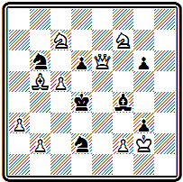
Мат в 3 хода
1. Kg 5 Кр:с5 2. Фе3+ С:е3 3. Kge 6#; 1... Се5 2. Ф d 5+ К: d 5 3. Ксе6#; 1... dc 2. Фе4+ К:е4 3. Kf 3#. Четвертый правильный мат получается в варианте 1... gf 2. Ф f6 + Се5 3. Ф: f 2 # .